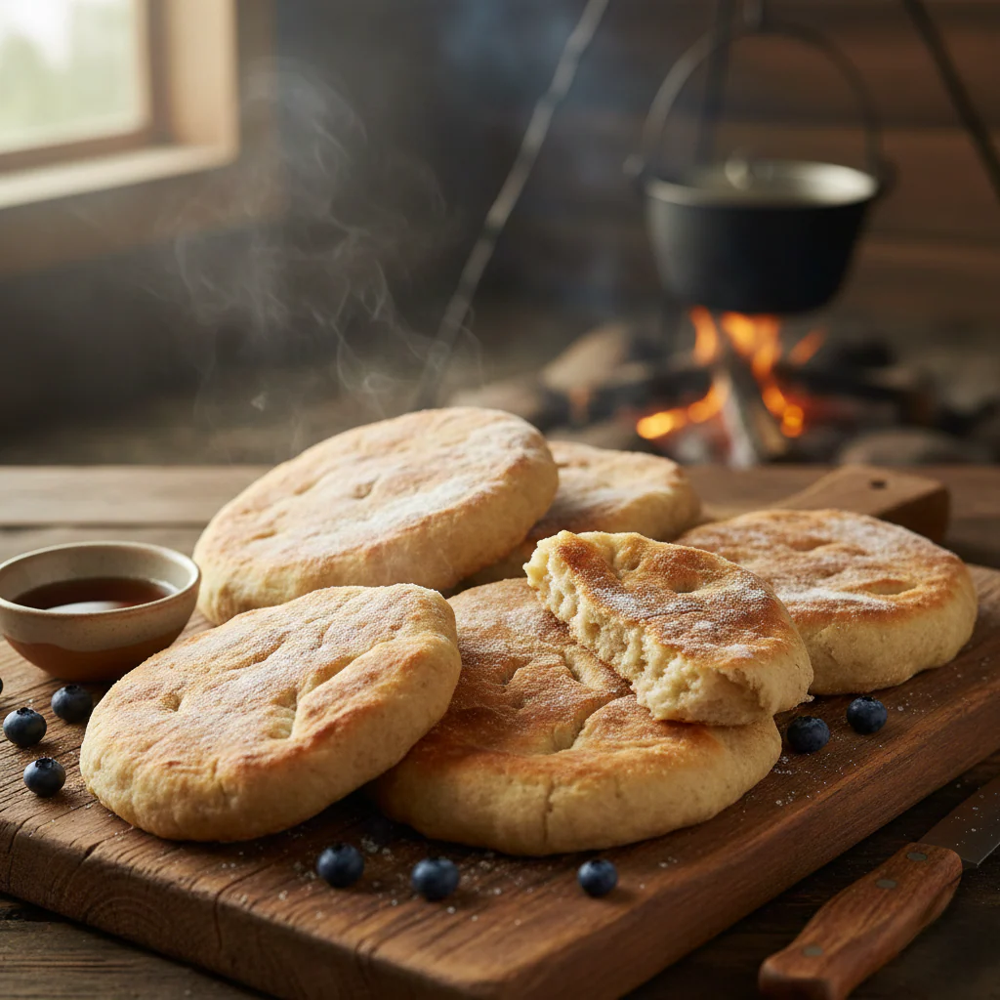

Saveurs du territoire et traditions culinaires

La cuisine autochtone du Canada est bien plus qu'une simple alimentation : c'est une expression profonde du lien entre les peuples et leur territoire. Chaque nation a développé des savoir-faire culinaires adaptés à son environnement, utilisant les ressources locales avec ingéniosité et respect.
Le pemmican est probablement l'aliment autochtone le plus célèbre. Ce mélange de viande séchée (bison, wapiti ou orignal) réduite en poudre, mélangée avec du suif et des baies (surtout les pemmican berries), constituait une nourriture ultra-concentrée parfaitement conservée. Les voyageurs des pays d'en haut, les coureurs des bois et même les explorateurs de l'Arctique en dépendaient pour leur survie.
La banique (ou bannock) est un pain plat, cuit à la poêle ou au four, fait de farine, d'eau et de levure ou de poudre à pâte. D'origine écossaise à la base, elle a été adoptée et adaptée par les peuples autochtones partout au Canada. Chaque famille possède sa recette, transmise de génération en génération. Servie chaude avec du beurre ou du sirop d'érable, elle accompagne les repas traditionnels.
La sagamité est une soupe épaisse à base de maïs, de haricots et parfois de viande. C'est un plat de confort, chaud et nourrissant, souvent préparé pour les cérémonies et les rassemblements communautaires. Sa préparation varie selon les régions : au Québec, on l'appelle aussi "sagamité", tandis qu'en Ontario, on parle souvent de "succotash".
La cuisine autochtone dépend étroitement du territoire :
Aujourd'hui, une nouvelle génération de chefs autochtones réinvente cette cuisine ancestrale. Des restaurants mettent en valeur les ingrédients traditionnels avec des techniques modernes. Des initiatives comme les "food sovereignty" (souveraineté alimentaire) encouragent les communautés à retrouver leurs pratiques alimentaires traditionnelles.
Manger autochtone, c'est aussi reconnaître la richesse du territoire et le respect profond que les Premières Nations ont toujours eu pour la nourriture qui les soutient.
Article rédigé avec respect pour les traditions autochtones et la mémoire des ancêtres.